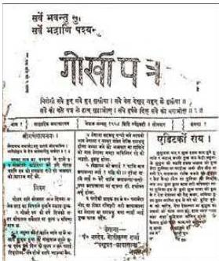
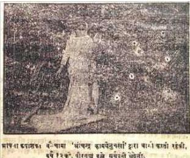
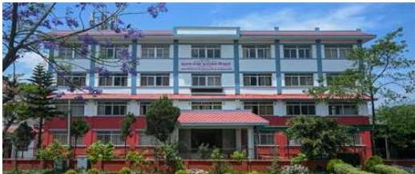
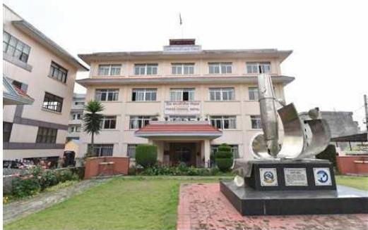

नेपालमा आमसञ्चार र पत्रकारिता
९.१ आमसञ्चार र पत्रकारिता
मानिसहरूले एकैपटक जानकारी पाउने माध्यमलाई आमसञ्चार भनिन्छ। आमसञ्चारबाट विशाल जनसमुदायले कुनै पनि सूचना वा जानकारी एकैपटक पाउने अवसर प्राप्त गर्दछ। ‘मास कम्युनिकेसन डिक्सनरी’मा आमसञ्चार भनेको व्यापक रूपमा सूचना, सन्देशहरू भिन्न प्रकृतिका र भौगोलिक रूपमा तितरबितर भएका वा छरिएर रहेका श्रोता, पाठक, दर्शकसामु सम्प्रेषण गरिने प्रक्रिया हो भनी उल्लेख गरिएको छ।
पत्रकारिताका प्राध्यापक लालदेउसा राईका अनुसार आमसञ्चार भन्नाले आमसमाजमा रहेका पाठक, श्रोता वा दर्शकहरूका लागि समसामयिक जानकारी वा शिक्षा वा मनोरञ्जन दिने तथा व्यक्तिगत वा सामाजिक तहमा वैचारिक वा व्यावहारिक परिवर्तन गर्ने खालका सन्देशहरू तुरुन्त पठाउने तथा तीबाटै प्रत्युत्तर पनि पाउने अपेक्षा गर्ने प्रक्रिया हो। आम सञ्चारले आमजनतालाई सुसूचित बनाउने, उनीहरूलाई विश्वमा भइरहेका गतिविधिबारे जानकारी गराई उनीहरूको जीवनमा परिवर्तन ल्याउने काम गर्दछ।
आमसञ्चारमाध्यमहरूमा पत्रपत्रिका, रेडियो, टेलिभिजन, अनलाइन समाचार माध्यम, पुस्तक, पच्ची, पम्पलेट, होडिङबोर्ड, आमसभा, सिनेमा आदि पर्दछन्। इन्टरनेटका माध्यमबाट हुने अनलाइन समाचार वा अन्य सोसल मिडिया कति जनाले पढे वा हेरे भनेर उनीहरूले क्लिक गरेको आधारमा गन्न सकिने तर्क कसैकसैले दिने गरेका छन्। तर एउटै मानिसले पटक-पटक क्लिक गर्न सक्ने र एकै क्लिकमा पनि सँगै बसेर कम्प्युटरमा एकभन्दा बढीले सँगसँगै हेर्न, पढ्न र सुन्न सक्ने भएकाले यो पनि गणना गर्न नसकिने नै हुन्छ। त्यसैले यी सबै आमसञ्चारका माध्यमहरू हुन्।
पत्रकारिता आमसञ्चारभित्र पर्दछ। पत्रकारितालाई अङ्ग्रेजीमा Journalism भनिन्छ। यो फ्रेन्च भाषाको De Jour बाट बनेको हो। फ्रेन्च भाषामा De Jour भन्नाले दिनभरिको भन्ने बुभिन्छ। De Jour बाट Journal र Journal बाट Journalism भएको मानिन्छ।
नेपाल परिच्छेद/३२१
त्यसैले पत्रकारिता भनेको दिनभरि भएका घटनाहरूमध्ये मुख्य-मुख्य घटनाहरूलाई काटछाँट गरेर त्यसबाट महत्वपूर्ण कुराहरू समाचारका रूपमा, अन्तर्वार्ताका रूपमा, समाचार समीक्षा वा सम्पादकीयका रूपमा वा फोटो, कार्टुनका रूपमा प्रकाशन वा प्रसारण गर्नु हो ।
पत्रकारितालाई ताजा घटनाका कुराहरू सञ्चालन र सम्पादन गरेर पत्रपत्रिका, रेडियो, टेलिभिजन वा अनलाइन न्युज पोर्टलका माध्यमबाट पाठक, श्रोता वा दर्शकका लागि सरल भाषामा सञ्चार गर्नु हो भन्ने गरिन्छ । पत्रकारितालाई छापा माध्यम र विद्युतीय माध्यम गरी दुई भागमा विभाजन गर्ने गरिएको छ । पत्रपत्रिकाहरू छापा माध्यमअन्तर्गत पर्दछन् भने रेडियो, टेलिभिजन र इन्टरनेटका माध्यमले सञ्चालन हुने अनलाइन मिडिया र सोसल मिडियाहरू विद्युतीय माध्यममा पर्दछन् । यहाँ छापा माध्यम र विद्युतीय माध्यमलाई बेग्लाबेग्लै शीर्षकमा उल्लेख गरिएको छ ।
९.१.१ छापा माध्यम
नेपाली भाषामा प्रकाशित पहिलो पत्रिकाको रूपमा वि.सं. १९४३ मा मोतीराम भट्टले काशीमा छपाएको ‘गोरखा भारत जीवन’ मासिकलाई लिइन्छ । नेपालमै छपिएको पहिलो नेपाली पत्रिकाचाहिँ वि.सं. १९५५ सालको श्रावण महिनामा प्रकाशित ‘सुधा सागर’ मासिक पत्रिका हो । ‘सुधा सागर’ निस्केको करिब २ वर्ष १० महिनापछि वि.सं. १९५८ वैशाख २४ का दिन ‘गोरखापत्र’ जन्मियो । सुरुमा साप्ताहिक रूपमा प्रकाशन भएको यो पत्रिका वि.सं. २००० असोज २९ गते अर्धसाप्ताहिक रूपमा र वि.सं. २००३ पुस ८ देखि हप्तामा तीन पटक प्रकाशन हुन थाल्यो । यो पत्रिका वि.सं. २०१७ फागुन ७ गतेदेखि दैनिक रूपमा प्रकाशन हुन थाल्यो । वि.सं. १९९१ फागुनमा ऋषिदबहादुर मल्लको सम्पादनमा नेपाली भाषाको ‘शारदा’ मासिक पत्रिका प्रकाशन हुन थाल्यो । नेपालमा लेखकहरूलाई प्रोत्साहित गर्न र सबैसँग परिचय गराउन सफल भएको ‘शारदा’ पत्रिका २०१० सालमा आएर बन्द भयो । वि.सं. २००७ साल फागुन ८ गते सिद्धिचरण श्रेष्ठको सम्पादनमा प्रकाशित ‘आवाज दैनिक’ पत्रिका नेपालमा प्रकाशित पहिलो दैनिक पत्रिका थियो । नेपालमा प्रकाशित पहिलो अङ्ग्रेजी पत्रिका वरुणशमशेरको सम्पादनमा सन् १९५४ मा प्रकाशित ‘नेपाल गार्जियन’ हो । उक्त पत्रिकाको छपाइ भने कलकत्तामा भएको थियो । वि.सं. २००७ सालमा वनारसमा

३२२/नेपाल परिचय
छापिएको बालचन्द्र शर्माद्वारा सम्पादित ‘नवनेपाल साप्ताहिक’ नेपालमा प्रकाशित पहिलो हिन्दी भाषाको पत्रिका हो। प्रथम धार्मिक पत्रिकाको रूपमा समेत चिनिएको ‘धर्मोदय’ नेपाल (नेवारी) भाषामा प्रकाशित पहिलो पत्रिका हो। उक्त पत्रिका वि.सं. २००४ सालमा प्रकाशित भएको थियो। त्यसैगरी मैथिली भाषाको ‘इनाप’ र ‘भोजपुरी’ भाषाको ‘फूलपात’ आ-आफ्नो भाषाका पहिला पत्रिका हुन्।

नेपालमा पत्रपत्रिका दर्ता व्यवस्थाको सुरुवात वि.सं. १९९४ सालदेखि भएको हो।
पत्रपत्रिकाको सङ्ख्या वृद्धि हुँदै गएपछि यस क्षेत्रमा पनि सुधारको आवश्यकता महसुस गरी २०१४ सालमा शाही प्रेस कमिसन गठन भयो। नेपालमा वि.सं. २०१५ साल फागुनदेखि सर्वोच्च अदालतबाट ‘नेपाल कानुन पत्रिका’ मासिक रूपमा प्रकाशन हुन थाल्यो। ऐन-कानुनसम्बन्धित संशोधन, आदेश, अध्यादेश, नियम सूचनाहरू आदि सङ्गृहीत यो पहिलो पत्रिका थियो। वि.सं. २०२७ सालमा नाम परिवर्तन गरी प्रेस सल्लाहकार परिषद् नामकरण गरियो। प्रेस जगत्लाई अभ्र जिम्मेवार, मर्यादित र प्रभावकारी बनाउने सन्दर्भमा प्रेस काउन्सिलले आचारसंहिता लागु गर्ने, प्रकाशित पत्रपत्रिका वितरण सम्परीक्षणको मापदण्ड र प्रक्रियालाई सुधार गरी पत्रपत्रिका वितरण सम्परीक्षणको मापदण्ड र प्रक्रिया तयार गरी लागु गर्नेलगायतका कार्य गर्दछ।
तालिका नं. ९.१
आ.व. २०८१/०८२ को फागुन मसान्तसम्म दर्ता भएका पत्रपत्रिकाहरूको विवरण
| दैनिक | अ.सा. | साप्ताहिक | पाक्षिक | मासिक | ई.मा. | त्रै.मा. | ची.मा. | अ.वा. | वार्षिक | अन्य | जम्मा |
|---|---|---|---|---|---|---|---|---|---|---|---|
| ७७२ | ३८ | २९९३ | ४८५ | २३९२ | ३९७ | ६६४ | ४१ | ९४ | ९५ | ६३ | ८०३४ |
स्रोत : सूचना तथा प्रसारण विभाग
नेपालको संविधानमा नागरिकलाई प्रत्याभूत गरिएको मौलिक हकअन्तर्गत सञ्चारको हकको व्यवस्था गरिएको छ। यसले प्रेस स्वतन्त्रताको विश्वव्यापी सान्दर्भिकतालाई नेपाली पत्रकारिता जगत्मा स्थापित गर्ने अपेक्षा राखिएको छ। छापाखाना तथा प्रकाशनसम्बन्धी ऐन, २०४८ र नियमावली, २०४९ ले पनि नेपाली पत्रकारिताको आयामिक विकासमा महत्वपूर्ण योगदान गरेको मान्नुपर्दछ। यसमा छापा पत्रिका दर्ता, पत्रकार परिचय-पत्र
नेपाल परिचय/३२३
वितरण, प्रकाशन गर्न निषेधित विषयवस्तु, प्रेस रजिस्ट्रारको व्यवस्था, पत्रपत्रिकाको श्रेणी विभाजन प्रक्रिया जस्ता विषयवस्तु समेटिएका छन् । श्रमजीवी पत्रकारसम्बन्धी ऐन, २०५१ तथा नियमावली २०५३ मा श्रमजीवी पत्रकारको हित संरक्षण, क्षमता विकास, अनुगमन व्यवस्था, उजुरी व्यवस्था, विवाद समाधानका विकल्पहरू, न्यूनतम पारिश्रमिक निर्धारण व्यवस्थालगायतका विषयहरू समावेश गरी नेपाली सञ्चार जगत् र सञ्चारकर्मी दुवैलाई व्यवस्थित, मर्यादित, सुरक्षित र व्यावहारिक बनाउन योगदान गरेको छ ।
छापाखाना
पन्ध्रौँ शताब्दीतिरै तयार भएको छापाखाना वि.सं. १९०८ मा जडगबहादुर राणाले बेलायतबाट फर्कँदा नेपाल भित्र्याएका हुन् । ‘गिद्धे प्रेस’को नामले परिचित सो प्रेसको वास्तविक नाम ‘कोलम्बियन प्रिन्टिङ प्रेस’ थियो । जडगबहादुरको निवासस्थान थापाथलीमा राखिएको सो प्रेसले वि.सं. १९५८ सम्म हुलाकपत्र, लिफाफा, टिकट, सरकारी कागजपत्र आदि छाप्ने गयो । यसको केही वर्षपछि नै ठँहिटीमा ‘मनोरञ्जन छापाखाना’ स्थापना भयो । नेपालमा ऐनको किताब पनि सबैभन्दा पहिले ‘मनोरञ्जन छापाखाना’बाटै छापिएको थियो । संवत् १९३० देखि १९३३ सालको बीचमा वीरशामशेरको निवासस्थान नारायणहिटीमा अर्को एउटा छापाखाना स्थापना गरियो । योबाहेक अर्को एउटा सरकारी छापाखाना पनि थियो । यसलाई ‘जडगी लिथोग्राफी छापाखाना’ भनिन्थ्यो । यो छापाखाना १९४९ सालभन्दा अगाडिदेखि नै वसन्तपुरमा थियो । नेपालमै पनि १९४९ सालमा कुवेरतन बज्राचार्यले हाते प्रेस बनाएका थिए । जुन प्रेसले १९७९ सम्म ‘बुद्ध प्रेस’को नाममा संस्कृत र नेवारी भाषाका धार्मिक पुस्तक छाप्ने गर्दथ्यो । पछि विभिन्न व्यक्ति हुँदै र विभिन्न स्थानमा पुग्दै यही प्रेस ‘अन्नपूर्ण’ प्रेसमा परिवर्तित भयो ।
वि.सं. १९६३ सालमा सरकारबाट एउटा सानो र एउटा ठुलोसमेत दुईओटा हाते प्रेस किनिए । यसका अतिरिक्त कुशल शिल्पी गेहेन्द्रशामशेरले पनि प्रेस बनाई ‘नारायण प्रेस’को नाउँबाट जमलमा स्थापना गरेका थिए । नेपालमा सरकारी छापाखानाबाहेक व्यवसायको रूपमा सबैभन्दा पहिले संवत् १९५० सालमा पण्डित मोतीकृष्ण तथा धीरेन्द्रकृष्णद्वारा ठँहिटीमा ‘पशुपत प्रेस’ नामक छापाखानाको स्थापना भयो । नेपालमा संवत् १९६९ सालमा बिजुलीबाट सञ्चालित छापाखानाको स्थापना भयो । यो पहिलो बिजुलीबाट सञ्चालित छापाखाना नक्सालमा राखिएको थियो ।
प्रजातन्त्र पुनर्बहालीपश्चात् छापाखाना तथा पत्रपत्रिकासम्बन्धी मौलिक हकको संवैधानिक व्यवस्था भएपछि छापाखाना उद्योगको व्यापक विस्तार हुँदै आएको छ । वर्तमान नेपालमा थुप्रै प्रेसहरू छन् र अभै पनि विस्तार हुँदै छन् । सरकारी तथा गैरसरकारी केही विशिष्ट प्रेसहरूमा नेपाल सरकारको मुद्रण विभागको छापाखाना, गोरखापत्रको छापाखाना, जनक शिक्षा सामग्री केन्द्रको एजुकेसन प्रेस, त्रि.वि. छापाखाना, जोरगणेश प्रेस, सहयोगी प्रेस आदि प्रमुख हुन् । सहरी क्षेत्रमा प्रेसको सुविधा उपलब्ध भए तापनि दुर्गम पहाडी जिल्लामा अभै पनि सामान्य प्रेसको उपलब्धता छैन भने केन्द्रीय तहमा सुरक्षित प्रेसको आवश्यकता महसुस गरिएको छ ।
३२४/नेपाल परिचय
नेपाल परिचय/३२५
९.१.२ टेलिभिजन
आमसञ्चारको सबैभन्दा सशक्त माध्यम टेलिभिजनको प्रयोग गर्ने निर्णय भएपछि २०४१ साल माघ १७ गते सरकारले प्रारम्भिक तयारीका निमित्त नेपाल टेलिभिजन परियोजनाको स्थापना गर्यो, जुन नेपालको टेलिभिजन युगमा पहिलो कदम थियो। नेपाल टेलिभिजनले आफ्नो प्रथम सफल परीक्षण प्रसारण २०४२ साल साउन २९ गते गर्यो। २०४२ सालमा संस्थानमा परिणत भएको तेस्रो दिनदेखि नै नेपाल टेलिभिजनले आफ्नो नियमित कार्यक्रम प्रसारणको शुभारम्भ गर्यो। परियोजनाले यु.एच.एफ. ब्यान्डमा भि.एच.एफ. ट्रान्समिटरबाट सुरुमा आधा घण्टा र २०४२ पौष १४ गतेदेखि साँभ ७ बजेदेखि ९ बजेसम्म २ घण्टाको नियमित प्रसारण प्रारम्भ गर्यो। २०४३ असार ११ गते राजा वीरेन्द्रबाट संसद् भवनबाट भएको सम्बोधनको पहिलोपल्ट प्रत्यक्ष प्रसारण गरेको थियो। जुन UHF Transmitter (O.5 Watt) प्रयोग गरी Yagi Receiving Anteena बाट सिंहदरबारस्थित भवनमा सिमनल प्राप्त गरी पुन: १०० Watts को VHF Transmitter मार्फत प्रसारण गरिएको थियो। नेपाल टेलिभिजनको प्रसारण विश्वभरिका राष्ट्रहरूमा भू-उपग्रहमार्फत टेलिभिजनका सङ्केत तरजहरुबाट विस्तार भइसकेको छ।
२०४४ कात्तिक २५ गते फूलचोकीमा रिले स्टेसनको स्थापना गरी २०४६ बैशाख १ गतेदेखि प्रभातकालीन प्रसारण प्रारम्भ भएको थियो। २०४२ साल पौष १४ गते आफ्नो नियमित प्रसारण प्रारम्भ गरेको नेपाल टेलिभिजनले २०६० आश्विन १० गते एन.टि.भी. मेट्रोको सह-प्रसारण प्रारम्भ गरेको छ। अबका दिनहरूमा टेलिभिजन प्रसारणमा प्रतिस्पर्धा गर्दै जानुपर्ने भएको छ। २०८० फागुनसम्म २४५ नेपाली स्थानीय तथा राष्ट्रिय टेलिभिजनले प्रसारण अनुमति लिएका छन् भने १४२ विदेशी च्यानलका लागि डाउनलिङ्क अनुमति प्रदान गरिएको छ। साथै २०८१ फागुन मसान्तसम्म २४७ नेपाली स्थानीय तथा राष्ट्रिय टेलिभिजनले प्रसारण अनुमति लिएका छन् भने १०८ टेलिभिजन नियमित प्रसारणमा रहेका छन्।
९.१.३ रेडियो प्रसारण
नेपालमा राणा प्रधानमन्त्री जुद्धशमशेरको पालामा मात्र रेडियो सेट भिकाइएको देखिन्छ। राणा प्रधानमन्त्री पद्मशमशेरको शासनकालमा २००४ सालदेखि सर्वसाधारण नेपालीलाई रेडियो राख्न पाउने स्वतन्त्रता प्राप्त भयो। रेडियो सेट आए तापनि तिनमा विदेशी प्रसारण मात्र सुन्न पाइन्थ्यो। २००४ सालतिर तत्कालीन प्रधानमन्त्री पद्मशमशेरको पालामा काठमाडौँको बिजुली अड्डामा साँभपख स्थानीय बजारभाउ र भजन प्रसारण गर्न आकाशवाणीको सेट प्रयोग गरिएको कुरा उल्लेख छ।
२००७ सालमा देशभर जनक्रान्तिको लहर फैलियो। यही बेला विराटनगरको क्रान्ति मैदानबाट ‘नेपाल प्रजातन्त्र रेडियो’ नामले सर्वप्रथम रेडियो गुम्जियो। यो एउटा सानो
‘टेलवार’ नामक ट्रान्समिटरको सहायताबाट चलेको थियो। जुन ट्रान्समिटर काठमाडौँ ल्याएर सिंहरदवार परिसरभित्र राखी २००७ साल चैत्र २० गतेका दिनदेखि प्रसारण कार्य शुभारम्भ गरियो। २५० वाटको ट्रान्समिटरको सहायताले प्रसारित रेडियोको नाम पछि ‘नेपाल प्रजातन्त्र रेडियो’ बाट ‘नेपाल रेडियो’ र त्यसपछि ‘रेडियो नेपाल’ भएको हो। २००९ सालमा मिडियम वेभ ७५ वाटको ट्रान्समिटरद्वारा भिन्दै प्रसारण सुरु भएको थियो। रेडियो नेपालको २०१२ सालमा ५ किलोवाट सर्टवेभ ट्रान्समिटरको स्थापना जाउलाखेलमा भयो। २०१४ साल चैत्र २९ गते रेडियो ऐन, २०१४ लालमोहर सदर भई २०१५।१।४ को नेपाल गजेटमा प्रकाशित भयो। रेडियो नेपालले साङ्गठनिक सुधारद्वारा सङ्ख्यात्मक क्षमता अभिवृद्धि गर्दै कार्यक्रममा विविधता गर्दै सर्ट वेभ, मिडियम वेभ र फ्रिक्वेन्सी मोडुलेशनको विस्तार गर्दै लगेको पाइन्छ।
रेडियो नेपालले नेपाली, अङ्ग्रेजी भाषामा समाचार बुलेटिनका अतिरिक्त मगर, गुरुङ, तामाङ, राई, लिम्बू, नेपाल भाषा, भोजपुरी, हिन्दी, उर्दु, पूर्वी थारू, पश्चिमी थारू, अवधी, शेपा, मैथिली, संस्कृत, खाम मगर र डोटेली भाषामा पनि समाचार बुलेटिन प्रसारित गर्दै आएको छ। रेडियो नेपालले आफ्ना कार्यक्रमहरू २६ अगस्ट १९९९ देखि भि-स्याट नेटवर्कबाट प्रसारण आरम्भ गरेको थियो। त्यसैगरी आफ्नो श्रोताहरूबीच पहुँच पुऱ्याउने हेतुले रेडियो नेपालले इन्टरनेटमा पनि प्रवेश गरिसकेको छ। नेपालमा एफ.एम. रेडियो प्रसारणको प्रारम्भ रेडियो नेपालले २०५२ माघ २८ मा गरेको थियो।
२०८१/०८२ को आर्थिक सर्वेक्षणअनुसार नेपालमा रेडियोको पहुँच ९४.० प्रतिशत पुगेको छ। राज्यले अवलम्बन गरेको समावेशी नीतिअनुरूप रेडियो नेपालबाट विभिन्न २५ भाषामा समाचार र २४ भाषामा कार्यक्रम प्रसारण हुँदै आएका छन्। २०८१ फागुन मसान्तसम्म ७३५ एफएम नियमित प्रसारणमा रहेका छन् भने २०८० असारसम्म ७२२ एफएम नियमित प्रसारणमा थिए।
९.१.४ अनलाइन सञ्चारमाध्यम
सूचना प्रविधिको विकाससँगै नेपालमा अनलाइन मिडियाले आफ्नो सशक्त उपस्थिति देखाइसकेको छ। नेपालमा अनलाइन सञ्चारमाध्यमको औपचारिक दर्ता भने अनलाइन सञ्चारमाध्यम निर्देशिका, २०७३ जारी गरी वि.सं. २०७३ चैत्र ९ गतेबाट नेपाल सरकार सञ्चार तथा सूचना प्रविधि मन्त्रालयअन्तर्गत सूचना तथा प्रसारण विभागबाट हुँदै आएको छ। आ.व. २०८१/०८२ को फागुन मसान्तसम्म सूचना तथा प्रसारण विभागमा ४,९४४ अनलाइन दर्ता भएका छन्। जसमध्ये सोही अवधिमा ३१२ नयाँ अनलाइन दर्ता तथा १,४६६ अनलाइन सञ्चारमाध्यम नवीकरण भएका छन्। ठुला लगानीमा सञ्चालित प्राय: सबैजसो दैनिक, साप्ताहिक, पाक्षिक तथा मासिक पत्रिकाहरूले समेत आआफ्ना अनलाइन संस्करण प्रकाशन गर्ने गरेका छन्। पिछला दिनहरूमा यो क्रमलाई एफएम रेडियो तथा टेलिभिजनहरूले समेत अनुसरण गरेका छन्। घटनाक्रमहरूको
३२६/नेपाल परिचय
तत्कालै जानकारी गराउने यी मिडियाहरूले प्रकाशित सामग्रीहरूको बारेमा तुरुन्तै पाठक प्रतिक्रियासमेत प्रकाशन गर्ने गरेका छन् । आगामी दिनमा अनलाइन मिडिया पनि मानव जीवनको अभिन्न पक्ष हुनेछ ।
९.२. राष्ट्रिय समाचार समिति
नेपाली पत्रकारितामा समाचार समितिको इतिहास वि.सं. २०१६ सालदेखि सुरु भएको पाइन्छ । निजी क्षेत्रबाट २०१६ साल पौष १ गते काठमाडौँमा स्थापना गरेको ‘नेपाल संवाद समिति’ (नेसस) नै नेपालको पहिलो समाचार समिति हो । त्यसको केही समयपछि निजी क्षेत्रबाटै २०१७ वैशाख ३० गते काठमाडौँमै अर्को समाचार समिति सगरमाथा संवाद समिति (ससस) स्थापना भयो । नेसस र सससलाई एकीकरण गरी २०१८ फागुन ७ गते राष्ट्रिय समाचार समिति (रासस) को स्थापना गरियो । २०१८ फागुन ७ गतेदेखि राससले आफ्नो नियमित समाचार बुलेटिन प्रारम्भ गर्यो । राज्य सञ्चालित समाचार समितिको रूपमा रहेको राससलाई कानुनी स्वरूप प्रदान गर्न रासस ऐन, २०१९ जारी भयो । राससले दिनमा पाँच पटक आफ्नो समाचार बुलेटिन प्रकाशित गर्दछ । नेपाली र अङ्ग्रेजी भाषामा प्रकाशित हुने यी बुलेटिनहरू राससको समाचारका उपभोक्ता (दैनिक पत्रिकाहरू, रेडियो प्रसारण, टेलिभिजन प्रसारण आदि) समक्ष इन्टरनेटको माध्यमबाट पुग्दछ । काठमाडौँ उपत्यकाका साथै नेपालका विभिन्न स्थानबाट प्रकाशित पत्रपत्रिका, रेडियो प्रसारण, टेलिभिजन प्रसारणका लागि आधिकारिक एवम् विश्वसनीय समाचारको स्रोत रासस नै रहेको छ ।
राससले AP, AFP, Xinwa, Reuters र PPI जस्ता अन्तर्राष्ट्रिय समाचार समितिबाट विश्वका विभिन्न स्थानका समाचारहरू प्राप्त गरी आफ्ना समाचारका उपभोक्ताहरूलाई वितरण गर्दछ । यसका साथै AP, AFP, Xinwa, Reuters बाट प्राप्त अन्तर्राष्ट्रिय घटनाक्रमका आकर्षक फोटोहरूबाट नेपालका दैनिक समाचारपत्रहरूको आकर्षण बढाई पाठकलाई थप सूचना र सन्तुष्टि प्रदान गराउनमा राससको उल्लेखनीय भूमिका रहिआएको छ ।
९.३ सञ्चारसँग सम्बन्धित निकायहरू
(क) सञ्चार तथा सूचना प्रविधि मन्त्रालय
सूचना प्रणालीको विकास र विस्तारका लागि कार्य विभाजन नियमावली, २०२४ ले सूचना तथा प्रसार मन्त्रालयको व्यवस्था गरी सञ्चारलाई यातायात, सञ्चार र जलविद्युत् मन्त्रालयमा राखेको थियो । प्रशासन सुधार आयोग, २०२५ ले सूचना र प्रसारण क्षेत्रलाई गृह, पञ्चायत तथा सूचना प्रसार मन्त्रालयअन्तर्गत बनाउन सीफारिस गरेअनुरूप वि.सं. २०२६ सालमा निर्माण, सञ्चार र यातायात मन्त्रालय स्थापना भएको हो । विशिष्टीकृत रूपमा सञ्चार मन्त्रालयको स्थापना वि.सं. २०२८ साल साउन १ गते भएको हो । तत्कालीन सञ्चार मन्त्रालयलाई उच्चस्तरीय प्रशासन सुधार आयोग, २०४८ को सीफारिसबमोजिम सूचना तथा सञ्चार मन्त्रालयमा परिवर्तन गरिएको थियो । नेपाल सरकार (कार्यविभाजन)
नेपाल परिचय/३२७
नियमावली, २०७४ बमोजिम साबिकको सूचना तथा सञ्चार मन्त्रालयमा सूचना प्रविधि क्षेत्रसमेत थप गरी मन्त्रालयको नाम सञ्चार तथा सूचना प्रविधि मन्त्रालय कायम गरिएको छ। सोहीबमोजिम सूचना तथा सञ्चार प्रविधि मन्त्रालयले आमसञ्चार, दूरसञ्चार, सूचना प्रविधि, प्रसारण, हुलाक सेवा, चलचित्र, सुरक्षण मुद्रणलगायतका कार्यको केन्द्रीय निकायको रूपमा नीति, कानुन, मापदण्ड, कार्यान्वयन र नियमन गर्दै आएको छ। यिनै काम कारबाहीलाई प्रभावकारी रूपमा सञ्चालन, व्यवस्थापन र नियमन गर्नका लागि यस मन्त्रालयमातहत निम्न निकायहरू सञ्चालनमा रहेका छन् :
मन्त्रालयसम्बद्ध निकायहरू
- राष्ट्रिय सूचना आयोग (सम्पर्क मन्त्रालयको रूपमा)
- सूचना तथा प्रसारण विभाग
- मुद्रण विभाग
- सूचना प्रविधि विभाग
- हुलाक सेवा विभाग
- प्रेस काउन्सिल नेपाल
- नेपाल दूरसञ्चार प्राधिकरण
- राष्ट्रिय समाचार समिति
- नेपाल टेलिभिजन
- रेडियो प्रसार सेवा विकास समिति
- गोरखापत्र संस्थान
- न्यूनतम पारिश्रमिक निर्धारण समिति
- चलचित्र विकास बोर्ड
- सुरक्षण मुद्रण विकास समिति
- नेपाल दूरसञ्चार कम्पनी लिमिटेड
- राष्ट्रिय सूचना प्रविधि केन्द्र (एकीकृत डाटा व्यवस्थापन केन्द्र)
- विज्ञापन बोर्ड
- प्रमाणीकरण नियन्त्रकको कार्यालय
- राष्ट्रिय साइबर सुरक्षा केन्द्र
(ख) सूचना तथा प्रसारण विभाग
नेपाल सरकारका सूचनाहरू जनतासमक्ष पुऱ्याउन राणाशासनको आधा शताब्दीसम्म एक मात्र माध्यम ‘गोरखापत्र’ थियो। अन्तिम राणा प्रधानमन्त्री मोहन शमशेरले २००५ मा प्रचार विभाग खडा गरे। २००७ सालको प्रजातन्त्रपछि यस विभागलाई ‘प्रचार-प्रसार’ विभाग नाम दिई गृह मन्त्रालयअन्तर्गत राखियो। प्रचार विभाग, प्रचार-प्रसार विभाग, प्रेस सूचना विभाग, सूचना विभाग गरी समय-समयमा नाम तथा कामको जिम्मेवारी परिवर्तन हुँदै पछिल्लो समय मिति २०७५ वैशाख ४ गते नेपाल सरकार (मन्त्रिपरिषद्) को निर्णयानुसार
३२८/नेपाल परिचय

सूचना तथा प्रसारण विभाग कायम भएको छ। प्रजातन्त्रको बहालीपछि नेपालमा पत्रकारिता जगत्को विकासको ढोका खुलेको भए तापनि २०१५ सालमा प्रेस कमिसनले नेपाली पत्रकारिताको विकासमा अनेकौँ रचनात्मक सुभाव दिएपछि मात्र यस विभागले पत्रकारिता क्षेत्रको आधुनिक युगमा प्रवेश गरेको हो।
नेपालको भौगोलिक अवस्था, इतिहास, पुरातात्त्विक सम्पदा, कला, संस्कृति, भेषभूषा, रीतिरिवाज, चाडपर्व तथा नेपालका अन्य विविध पक्षसम्बन्धी सूचनाहरू नेपालभर प्रचार-प्रसार गर्ने र विश्वसामु नेपालको पहिचान गराउनेजस्ता उद्देश्य लिई यस विभागले समाचारचित्र, वृत्तचित्र र कथानक चलचित्र बनाउने तथा प्रदर्शन गर्ने र त्यस्तै खालका लेख, रचनाहरू २०२७ साल जेठ ३० गतेदेखि नेपाल पत्रिकामार्फत प्रकाशन गर्नेजस्ता कामहरू गर्दै आएको देखिन्छ। हाल नेपाल पत्रिकालाई नेपाल सरकारको नीतिमूलक पत्रिकाको रूपमा विकास गर्दै लैजाने सोच विभागको रहेको छ। यस विभागबाट विभिन्न विद्वान् लेखकहरूबाट लिखित एवम् अनुवादित विभिन्न उपयोगी र ज्ञानवर्द्धक पुस्तक-पुस्तिकाहरू प्रकाशन एवम् निःशुल्क वितरणका अलावा आमा, हिजो आज भोलि र परिवर्तनजस्ता नेपाली कला संस्कृति र मनोरञ्जनले भरिपूर्ण नेपाली कथानक चलचित्रहरू पनि निर्माण र प्रदर्शन भएका थिए।
नेपाल सरकारको सूचना प्रवाह गर्ने, नेपाली पत्रकारहरूको पेसागत हकहितको संरक्षण एवम् पत्रकारिता जगत्को स्वस्थ, मर्यादित तथा संस्थागत विकासका लागि सूचना तथा प्रसारण विभाग आफ्नो सेवा प्रदान गर्ने कार्यमा कटिबद्ध छ। संवैधानिक कानुनहरूको कार्यान्वयन गराउने क्रममा पत्रकारहरूलाई प्रेस प्रतिनिधि प्रमाणपत्र उपलब्ध गराउने र पत्रपत्रिका एवम् पत्रकारको अभिलेख राख्ने तथा पत्रकारको क्षमता विकास गर्ने जिम्मेवारीसमेत यस विभागले पूरा गर्दै आएको छ।
सूचना तथा प्रसारण विभागले सार्वजनिक सूचनालाई एकै थलोमा सङ्ग्रह गरी वितरण गर्न सूचनाको हब निर्माण गरी वितरण गर्ने, नेपाल पत्रिकामा सरकारका नीतिहरू प्रकाशन गर्ने, फोटो बैंक स्थापना गर्ने कार्यको थालनी गरेको छ। साथै, दुर्गम क्षेत्रमा कार्यरत
नेपाल परिचय/३२९
श्रमजीवी पत्रकारहरूलाई क्षमता अभिवृद्धि तालिम प्रदान, पत्रकारितामा अध्ययनरत विद्यार्थीहरूलाई छात्रवृत्ति प्रदान, कार्यरत पत्रकारहरूका लागि दुर्घटना बिमा, स्थानीय स्तरमा पुगी पत्रकारहरूका लागि घुम्ती शिविर सञ्चालन तथा पत्रकार वृत्तिकोषमार्फत ज्येष्ठ पत्रकारहरूलाई वृत्ति प्रदान गर्ने कार्य गरिरहेको छ ।
यस विभागले विश्वसामु नेपालको पहिचान गराउने उद्देश्य लिई विभिन्न ज्ञानवर्द्धक तथा सूचनामूलक पुस्तक नेपाल परिचय, नेपाल : विविधतामा एकता फोटो पुस्तक, नेपाल द्वैमासिक पत्रिका, शुभकामना डायरी तथा नेपाल सरकारको आधिकारिक क्यालेन्डर जस्ता सामग्रीहरू प्रकाशन तथा वितरण गर्दै आइरहेको छ । यस विभागले नेपाल सरकारको आधिकारिक फोटोग्राफरको हैसियतले राष्ट्र प्रमुख तथा सरकार प्रमुखहरूको विदेश भ्रमण एवम् नेपाल भ्रमणमा आउने मित्रराष्ट्रहरूका राष्ट्र प्रमुख तथा सरकार प्रमुखहरूका तर्फबाट सम्बोधन गरिने पत्रकार सम्मेलनहरूको आयोजना तथा औपचारिक फोटोग्राफरको हैसियतले उक्त अवसरमा आयोजना हुने सरकारी समारोहहरूको तस्बिर छायाङ्कन, प्रकाशन, अभिलेखीकरण तथा निःशुल्क वितरण गर्ने कार्य गर्दै आइरहेको छ ।
२०७५ सालदेखि यस विभागले प्रसारणको कार्यसमेत गर्दै आइरहेको छ । यस विभागले प्रसारणतिर रेडियो सञ्चालन संस्था, राष्ट्रिय टेलिभिजन सञ्चालन तथा वितरक संस्था, विदेशी टेलिभिजनको downlink तथा सिमनल वितरक संस्थालाई इजाजत दिने तथा नियमन गर्ने गरिरहेको छ भने सञ्चार उपकरण जस्तै- FM-Transtimitter, वाकी-टाकी, VSAT, Digital Headend, Earth Station, Amateur Radio लगायतको लाइसेन्स जारी गरिरहेको छ । साथै उक्त उपकरणहरूको बिक्री-वितरणको लाइसेन्स तथा आयात सीफारिस तथा नियमनसमेत गरिरहेको छ । अन्तर्राष्ट्रिय प्रचलनअनुसारको Amateur Radio को परीक्षाको व्यवस्थासमेत गर्दै आइरहेको छ ।
(ग) प्रेस काउन्सिल नेपाल
पत्रकारितामा पेसागत उच्चतम आचरण कायम राखी स्वस्थ, स्वतन्त्र र उत्तरदायी पत्रकारिताको विकास तथा संवर्द्धनका लागि वि.सं. २०२७ साल असोज ६ गते प्रेस काउन्सिल नेपालको विधिवत् स्थापना भएको हो । यसले प्रेस काउन्सिल ऐन, २०४८ बमोजिम कार्य गर्दै आइरहेको छ । पत्रकारितासम्बन्धी नीतिगत कुराहरू समय-समयमा अवलोकन गरी सम्बन्धित क्षेत्रको राय सल्लाह लिई नेपाल सरकारलाई सुभाव दिने, पत्रकारिताको पेसागत मर्यादा र उत्तरदायित्व कायम गर्ने, स्वस्थ पत्रकारिता विकासका लागि आचारसंहिता तयार गरी कार्यान्वयन र अनुगमन गर्ने, पत्रपत्रिका वर्गीकरण गर्ने, पत्रकारिताको विकासका लागि नेपाल सरकारलाई सुभाव दिने, पत्रकारिताको वितरण स्थितिको अद्यावधिक अभिलेख राख्ने, पत्रपत्रिकामा प्रकाशित समाचारसँग सम्बन्धित विषयलाई लिएर कसैले काउन्सिलमा उजुरी दिएमा सो सम्बन्धमा आवश्यक कारबाही गर्ने, पत्रपत्रिकाको गतिविधि एवम् वस्तुस्थितिबारे अध्ययन र मूल्याङ्कनसहितको वार्षिक प्रतिवेदन सरकारसमक्ष पेस गर्ने जस्ता काम, कर्तव्य र अधिकार प्रेस काउन्सिल
३३०/नेपाल परिचय

नेपालको रहँदै आएको छ। पत्रकारितामा विशेष योगदान पुर्याएका पत्रकार, सम्पादक, प्रकाशक, श्रमजीवी पत्रकारका साथै साहित्यिक पत्रकारितासँग सम्बन्धित महानुभावहरू समेतको प्रतिनिधित्व गराई काउन्सिल गठन गरिएको छ। प्रेस काउन्सिल ऐन, २०४८ र प्रेस काउन्सिल (कार्य व्यवस्था) नियमावली, २०४९ बमोजिम प्रेस काउन्सिल नेपालको नियमित कार्यहरूको व्यवस्थापन हुँदै आएको छ।
(घ) नेपाल पत्रकार महासङ्घ
देशभरका पत्रकारहरूको छाता सङ्गठन नेपाल पत्रकार महासङ्घको स्थापना वि.सं. २०१२ साल चैत १६ गते भएको हो। यसका संस्थापक अध्यक्ष पूर्वप्रधानमन्त्री कृष्णप्रसाद भट्टराई हुन्। सबै जिल्लामा जिल्ला शाखा रहेको यस महासङ्घको प्रमुख उद्देश्य एवम् कार्यहरू यस प्रकार छन् :
- नेपाल राज्यभर आमसञ्चारका विभिन्न क्षेत्रमा क्रियाशील पत्रकारहरूलाई एक सूत्रमा आबद्ध गरी व्यावसायिक नेतृत्व प्रदान गर्ने
- पत्रकारहरूको व्यावसायिक हकहितका लागि नेतृत्व प्रदान गर्दै उनीहरूको हक अधिकारको संरक्षण गर्न क्रियाशील रहने
- जिम्मेवार, उत्तरदायी, अनुशासित पत्रकारिताको संस्थागत विकासमा क्रियाशील हुँदै प्रेस स्वतन्त्रताको आदर्शालाई परिपालना गर्ने
- राष्ट्रिय र अन्तर्राष्ट्रिय क्षेत्रमा क्रियाशील पत्रकारिता क्षेत्रसँग सम्बन्धित सङ्घ संस्थाहरूसँग सौहार्द्धपूर्ण सम्बन्ध विस्तार गर्ने तथा विभिन्न देशका सङ्घ संस्थाहरूसँग
नेपाल परिचय/२२१
प्रतिनिधिहरूको आदानप्रदान गर्ने
- पत्रकारिता क्षेत्रसँग सम्बन्धित विषयमा अध्ययन, अनुसन्धान, सभा, सम्मेलन, गोष्ठी, प्रशिक्षण आदि सञ्चालन गर्ने
-
पत्रकार जगत्को हितका लागि अन्य आवश्यक काम गर्ने
-
- +
३३२/लेपाल परिचय
परिच्छेद : दक्ष